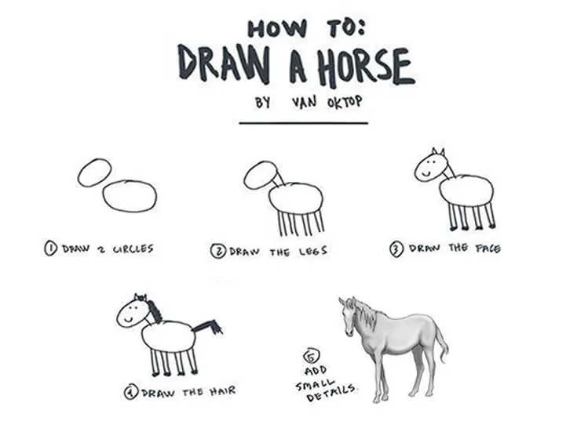

Since past two years, I’ve been much busy tasting the flavors of new programming language.
I switched from PHP to JavaScript, then JavaScript to Python and so on.
The reason to switch was, I’ve been testing my area of interest. Also, I was picking suitable language to start my career.
At first, I started learning JavaScript with the help of FreeCodeCamp. It did went well, however I switched to Python.
Coding is a habit. Switching programming language brings demotivation. It’s because you need to start learning all over again.
Once, I was reading Quincy Larson’s blog (teacher at FreeCodeCamp).
Eventually, I found something worth reading – One does not simply learn to code.
As you can see the picture below How to : Draw a Horse. Simply, you can’t improve your coding skills with just tutorial courses.

Later, I realized learning to code is not just enough. However, building with the practical projects is mandatory. So, to get some suggestions, I went through Quora / reddits.
Finally, I stumbled upon an interesting article, Join the #100DaysOfCode, where you
- Code at least an hour a day for next 100 days.
- Tweet everyday about your progress
- Make this a public commitment.
- If you’re interested, you can join me at 100 Days of Code.
Starting 100 Days of Code – Day 1

Starting from March 7, 2018, I officially announce that I’ve accepted challenge 100 Days of Code.
In days ahead, I will be learning and start doing the Data Science (Analytics) and Machine Learning projects.
Finally, for those who want to take part in #100DaysOfCode challenge, you’re free to share this with your friend. Have fun, Enjoy Coding !!!.
Update : I’ve completed the challenge, read my #100DaysOfCode story.